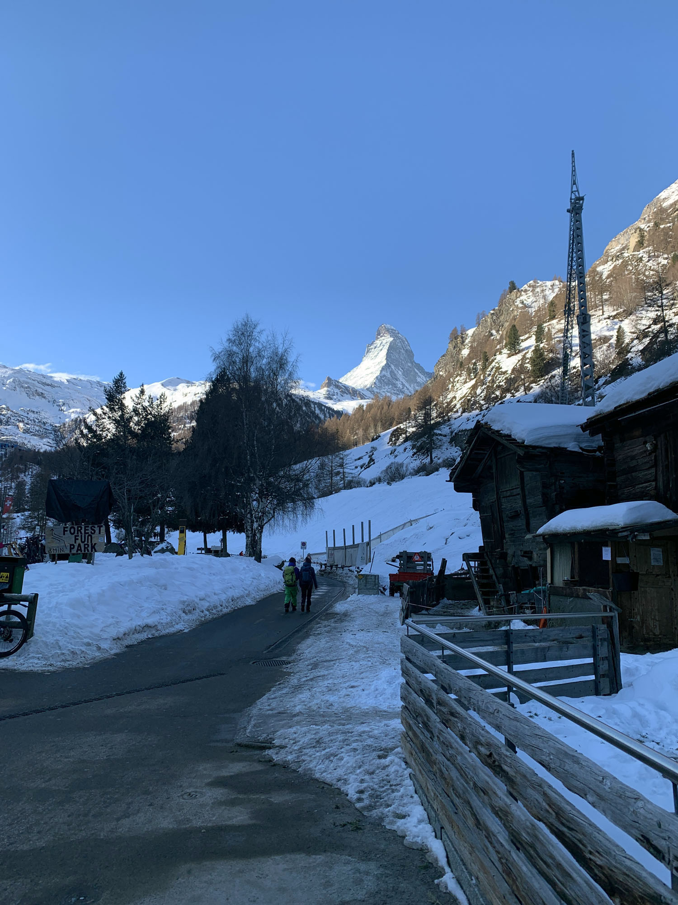
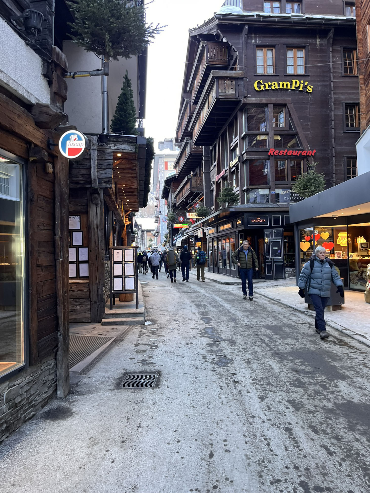
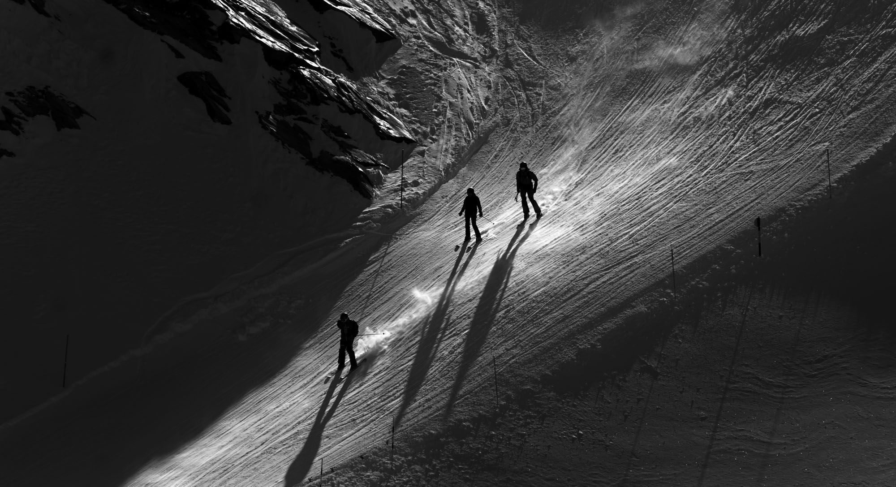
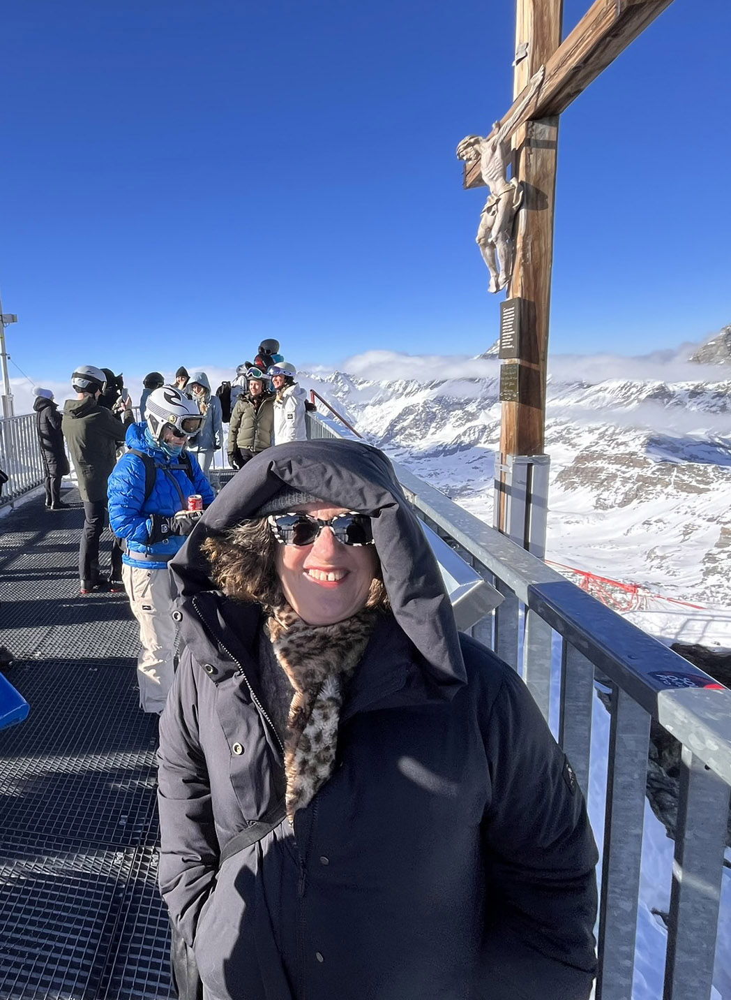
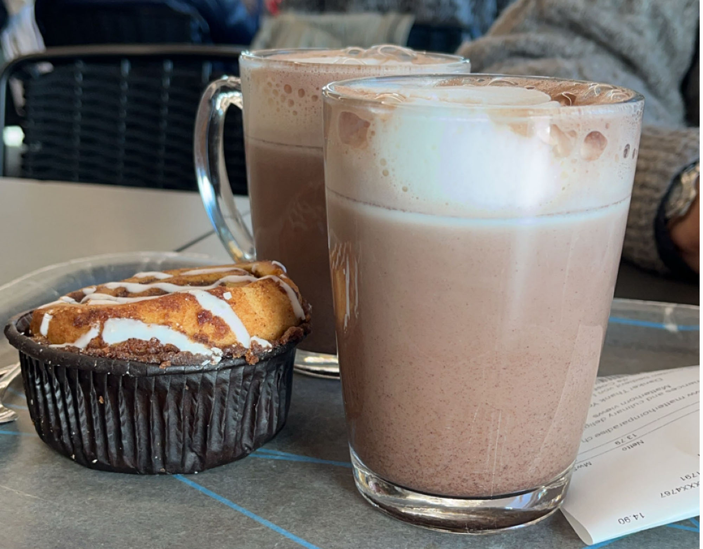
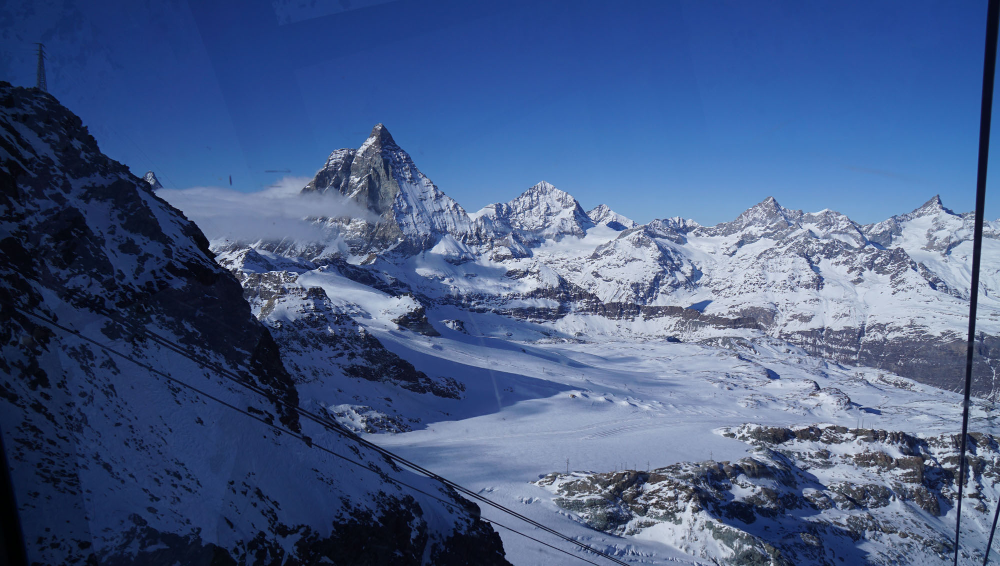
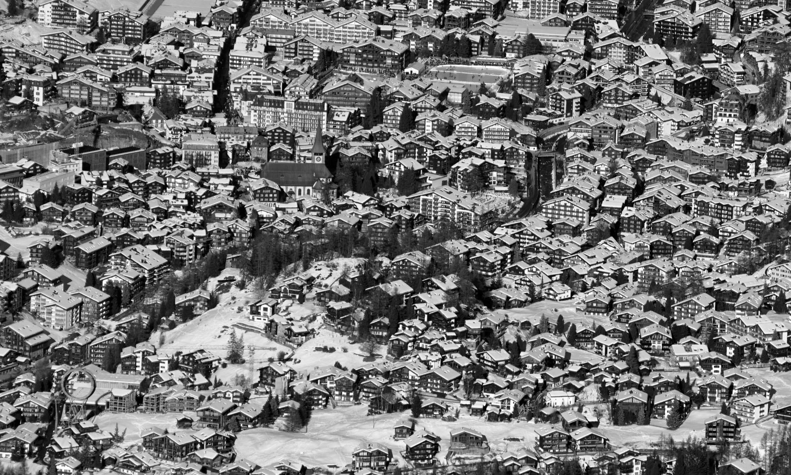
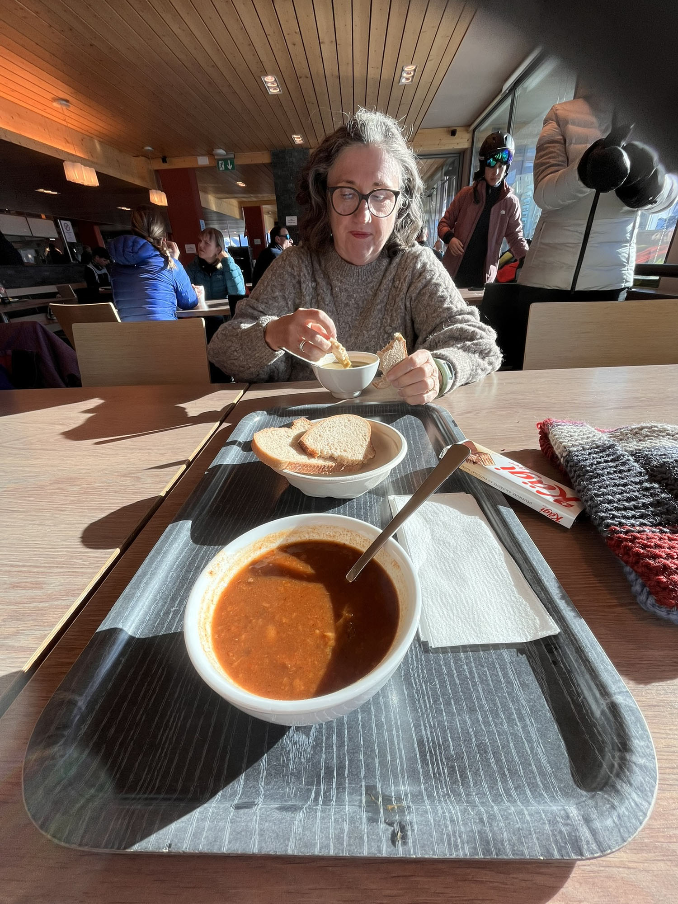
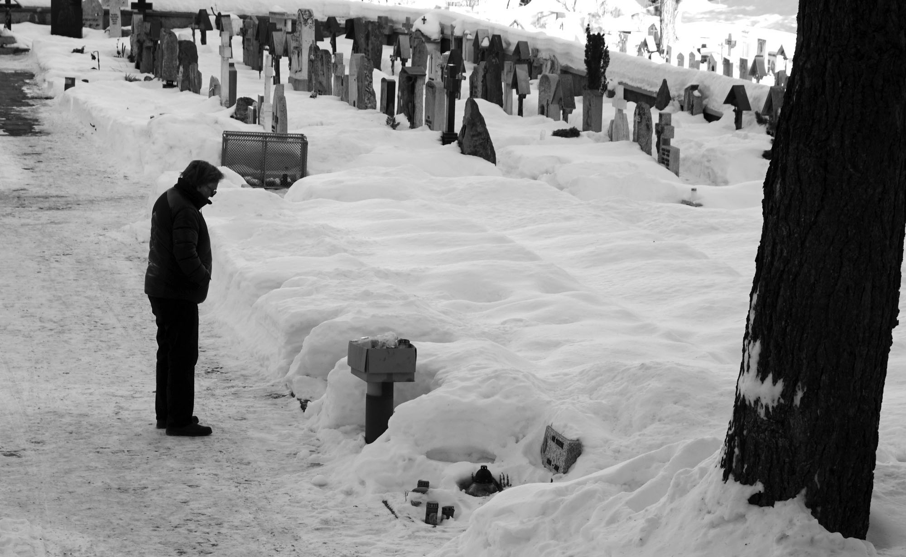
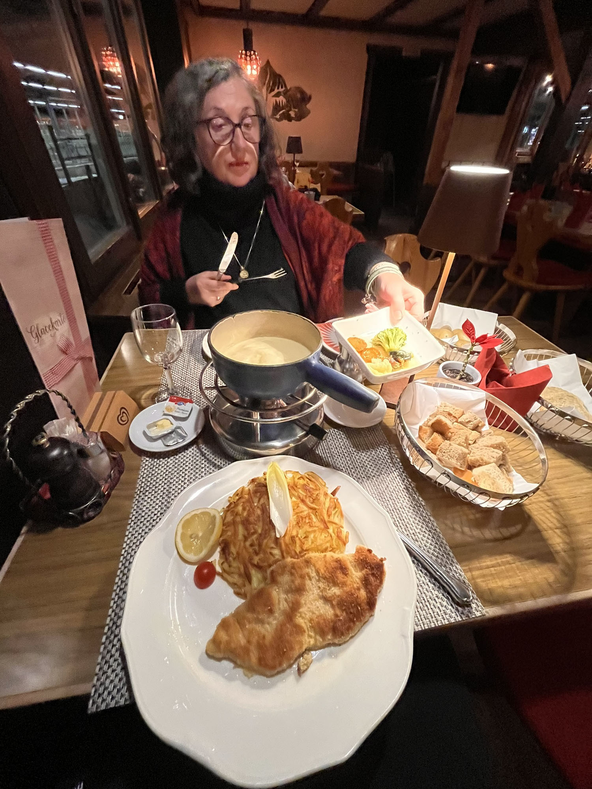

It was a glorious morning when we woke from our slumbers at the Hotel Täscherhof. Not only did we wake up fully charged and ready to go, but our handwashed clothes had dried overnight on the heated bathroom floor and the towel warmer. Even the milk on the balcony hadn't frozen solid. As we were leaving to catch the shuttle we took a quick peek at the buffet breakfast and decided that we'd hook in for brekky the next day.
Less than thirty minutes after leaving the hotel we were in Zermatt. As we wandered through town we were staggered at the overwhelming number of designer stores that lined the streets. Jewellery, watches, inadvisable fashion items for such a cold location, and the odd shop full of tourist tat, tempted the passing stream of humanity. This all counted for nought when we suddenly caught a glimpse of the magnificent Matterhorn. It is absolutely spectacular and according to many of our friends who travelled before us, we were lucky that the weather was clear.


There is a saying in Australia that has to do with fornicating with spiders, but the more polite variant is 'we're not here for a haircut.' We had already decided that we would catch the Matterhorn Glacier Paradise up to the top of Klein Matterhorn, and it was worth every franc of the 190 CHF we spent.
The trip from Zermatt to the peak takes 40 minutes, don't worry this is not a legs dangling experience, you'll be in one of the heated cabins. You do have to change midway up at Trockener Steg, which helps you keep the blood circulating.

📷 Photo by Mark LoganOur first stop once we reached the top was the viewing platform. As we lined up for the lift that takes you to the platform, one of the guides accompanying some American students warned them that they may experience a few symptoms of high altitude, including dizziness, breathlessness and nausea.
Mark was thinking that 'these yanks must be soft' but he had to eat his words as soon as the doors opened and we stepped out into the -17c face-slapping cold. Within a few steps Mark was reaching for the handrails and was regretting all those ciggies he had when he was a younger man. Breathless and dizzy we made our way around the platform exchanging our phones and cameras with complete strangers for something better than the obligatory Matterhorn selfie.

As we stood there taking in the 38 peaks that were greater than 4,000 metres, the 13 glaciers and three countries, we noticed a young man clambering out over the rails and onto some sort of gantry that hung over the edge. He was from that moment on known as 'That crazy young guy.' We then saw a couple with their dog on the platform. The poor hound had his tail tucked firmly between his legs and was shivering undoubtedly from both fear and cold.
With Mark fearing that his glasses would adhere to his face, we went down to the cafe and ordered two hot chocolates and a cinnamon bun. We spoke to two young German guys who happened to be studying medicine. One of them asked us to look at our fingernails and pointed out how the quick, that moon shaped area at the base of your nails, had a slight purple tinge to it, a sign, he said, of oxygen depletion.

As we continued talking the conversation came around to 'That crazy young man' hanging from the gantry above. Turns out it was one of them and he also enjoys nothing more than plummeting down a mountain on two planks of wood while directing his travels with two twigs. We blame oxygen deprivation.
After the restorative hot cocoa and delicious bun, we wandered into the Cinema Lounge and watched the film showing people even crazier than 'That crazy young guy.' climbing along the ridges and peaks surrounding Klein Matterhorn.
Then it was down into the glacier itself and the Glacier Palace where we were amazed at some of the ice works on display. Carved out of the glacial ice, these sculptures not only represent the creativity and ingenuity of humanity, but the strength and awe that is mother nature. If you're concerned about altitude sickness, it's a good place to acclimatise before heading out onto the platform.


📷 Photo by Mark LoganOnce we had seen everything at the top we descended back down to ICE Buffet at the Trockener Steg station where once again we had Goulash soup with bread. Mark had a great time taking photos of the skiers on the mountain and those taking a break for a smoke or vape outside.

With our reservation at Hotel Täscherhof lined up we eschewed some of the temptations wafting out of the restaurants and bars in Zermatt and fortified ourselves for a feast.
What we had not noticed before now, and it was something that we paid a lot of attention to afterwards, was the provenance of the food we were being invited to eat. It shook us to discover that restaurants list where their meat comes from. The 'Fisch and Fleischdeklaration' listed that the only local meats to come from Switzerland were the pork and veal, with Germany also supplying pork. The beef was from Paraguay, the chicken was from Brazil, the fish from Norway and the lamb from either New Zealand or Australia.

📷 Photo by Mark LoganDespite the fact that we love cooking, we've never been fondue people - it all seems too much like hard work, and possibly far too unhealthy. Not being afraid of concerns such as high cholesterol or an expanding waistline, we shared the fondue and added a superb pork schnitzel. At 80 CHF including wine and beer as well as biblical quantities of bread and potatoes, it was unsurprising that all the locals were there.

It was so enjoyable that we really lashed out and enjoyed a hearty breakfast the next morning, and we were lucky we did, because that was some adventure.